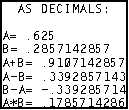
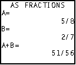
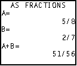
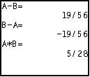
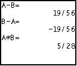
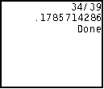
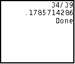

| HOME >> Tutorials >> Tutorial 29: Fractions & Decimals |
Introduction:
This tutorial should be a pretty short one. There is not that much information or examples to show concerning how to display fractions and decimals on the home screen. As you most likely know, all non-integer answers come out as decimals on the calculator. However, this is a command that can display that rational number as a fraction.
New Commands:
| Displays a value as a fraction in its simplest form | |
| Displays a value in decimal form |
| value |
value |
The Codes:
There will be just one, which will show all the usages of both  Frac and
Frac and  Dec. Just in case you did not read it in either of the commands further definitions, you cannot use either command with Text( or Output(, but only with Disp.
Dec. Just in case you did not read it in either of the commands further definitions, you cannot use either command with Text( or Output(, but only with Disp.
| : | For AShell, SOS, and TI-Explorer |
| ClrHome | Clears the home screen |
| .625 |
Stores A as 0.625 and B as 2 divided by 7 |
| Output(1,3,"AS DECIMALS: | Displays "AS DECIMALS:" centered on the top line |
| Output(3,1,"A= | Displays "A=" on third line |
| Output(3,4,A | Displays the value of A |
| Output(4,1,"B= | Displays "B=" on third line |
| Output(4,4,B | Displays the value of B |
| Output(5,1,"A+B= | Displays "A+B=" on third line |
| A+B |
Stores C as the value of A plus the value of B |
| Output(5,6,C | Displays the value of C (A+B) |
| Output(6,1,"A-B= | Displays "A-B=" on third line |
| A-B |
Stores D as the value of A minus the value of B |
| Output(6,6,D | Displays the value of D (A-B) |
| Output(7,1,"B-A= | Displays "B-A=" on third line |
| B-A |
Stores E as the value of B minus the value of A |
| Output(7,6,E | Displays the value of E (B-A) |
| Output(8,1,"A*B= | Displays "A*B=" on third line |
| AB |
Stores F as the value of A multiplied by the value of B |
| Output(8,6,F | Displays the value of F (A*B) |
| Pause | Suspends program and waits for use to press |
| ClrHome | Clears the home screen |
| Disp "","A=",AFrac | Displays a blank line, "A=", and the value of A as a fraction |
| Disp "B=",BFrac | Displays "B=" and the value of B as a fraction |
| Disp "A+B=",CFrac | Displays "A+B=" and the value of C (A+B) as a fraction |
| Output(1,3,"AS FRACTIONS | Displays "AS FRACTIONS" centered on the top line |
| Pause | Suspends program and waits for use to press |
| ClrHome | Clears the home screen |
| Disp "A-B=",DFrac | Displays "A-B=" and the value of D (A-B) as a fraction |
| Disp "B-A=",EFrac | Displays "B-A=" and the value of E (B-A) as a fraction |
| Disp "A*B=",FFrac | Displays "A*B=" and the value of F (A*B) as a fraction |
| Pause | Suspends program and waits for use to press |
| ClrHome | Clears the home screen |
| Disp (1/3)+(7/13)Frac | Displays the value 1/3 plus 7/13 as a fraction |
| Disp AnsDec | Displays the value of last answer (a decimal) |
 press   press
 press   press
 press  

Well, there is actually very little to explain here. It is pretty easy to understand the concepts behind  Frac and
Frac and  Dec. In the first part of the code, the values are displayed in decimal form, just like you normally would have done in any program. In the second and third part, those values are now turned into fractional values and then displayed. Once again, we cannot use
Dec. In the first part of the code, the values are displayed in decimal form, just like you normally would have done in any program. In the second and third part, those values are now turned into fractional values and then displayed. Once again, we cannot use  Frac or
Frac or  Dec with Output(. Showing you a good example of how to use
Dec with Output(. Showing you a good example of how to use  Dec is really hard, because there is never really a good to do that because the calculator already does. In the fourth part of the program, I showed you how to use it, but you could have easily just left
Dec is really hard, because there is never really a good to do that because the calculator already does. In the fourth part of the program, I showed you how to use it, but you could have easily just left  Dec out and the output would have been the exact same.
Dec out and the output would have been the exact same.
Conclusion:
This tutorial probably did not help you in anyway improve you game programming skills, but it might help you when you want to make some sort of math or science related program. For instance, if you are making a quadratic factoring program, rational answers are usually written in fractions when it is done with pencil and paper. To simulate an exact answer that you would get with pencil and paper on the calculator, it is best to change the resulting values into fractions. The next tutorial and the one following that continue with the math theme, showing you all the major math commands.
If you do not understand a particular part in this lesson, have suggestions, or find any problems please contact me.
 |
 |
| Tutorial 28 | Tutorial 30 |